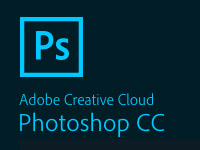
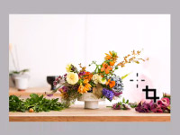
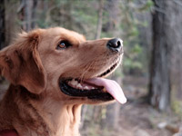
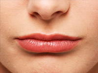

其实对于ps，我是非常喜欢的。以前大学的时候就对PS感兴趣，觉得PS好厉害，很万能的感觉。出来第一份工作就是做的PS修图的工作，特别是塑造人物形象这方面更是已经练得炉火纯青。只是后来转型做前端，慢慢接触得少了，一身本事也忘得七七八八。只剩下一些比较基本的比较难忘的功能还能玩一玩，当然啦，毕竟基础还在，需要捡起来的时候也是可以很快上手的。这里分享一些PS小技能小知识，说不定对你有用。话说，我新录的视频声音怎么还是那么小(⊙_⊙)
-

PS的安装
PS的安装其实是比较简单的，几个关键点操作对就行，我给大家演示怎么安装PS。
需要注意的是，记得断网 -
PS安装插件
许多插件官网都会自带安装教程，如果是别处下载的可以试试另外的安装方法。
安装教程别人已经珠玉在前，我直接分享了 -

图片的尺寸裁剪
PS最基础的应用，调整图片的尺寸和大小，还有改变图片的格式。
多利用辅助线辅助 -

背景比较干净的时候抠图
因为背景比较干净的时候推荐一种简单的抠图方法，背景复杂，请另外找教程。
当蒙版选区选中后，记得切换到图片图层 -

以前用得最多的技能
PS最出名的应用是拿来干嘛，当然是P图啦。 其实关于PS美白瘦身的教程，网上真的已经非常多了， 我再出的话不过是再往许多金子上丢一粒沙子。 所以我在这里只是讲一讲怎样让P图看起来更自然。 首先，如果人物离镜头不是太近的话，一般人注意不到细节是否失真， 那么美白磨皮这些操作都是可以放心用的。 如果人物离镜头比较近，那么别人的注意力 容易集中到脸上、身材上，那么就不要P太狠了。 然后就是，不要无脑直接 大眼 增高。 想要相片看起来自然，一定要注意身形比例。 眼睛大小和脸是否匹配，腿长和手臂长度匹配吗。 再一个要注意的是P的地方附近是否有物体扭曲，这也是个注意点。 所以新手P图，最重要的是把握好一个度。